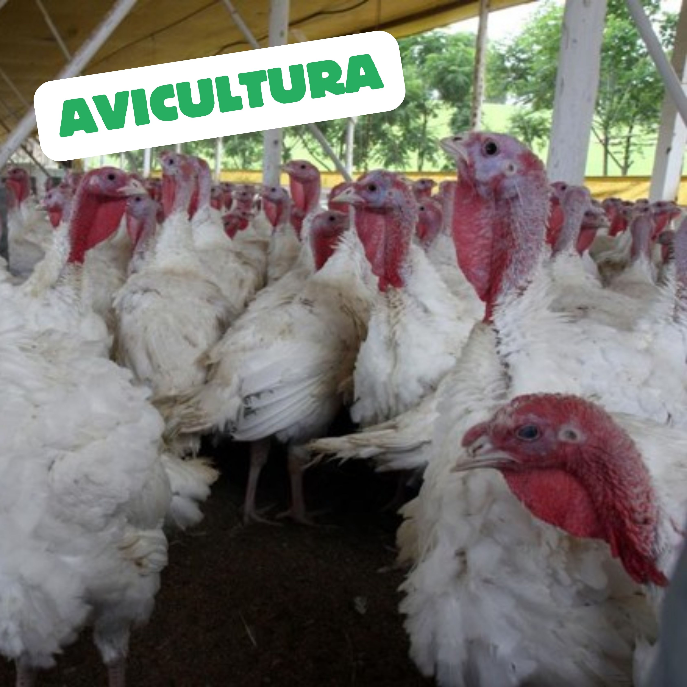

A avicultura, que envolve a criação de aves como galinhas, patos, perus e codornas, é essencial para a economia global e a segurança alimentar.
A avicultura é crucial por várias razões:
Segurança Alimentar: Fornece fontes acessíveis de proteína de alta qualidade.
Economia Global: Gera milhões de empregos e tem um alto valor econômico.
Versatilidade Alimentar: Produtos avícolas são usados em diversas culinária ao redor do mundo.
Se a avicultura não existisse, os impactos seriam profundos:
Déficit de Proteína: Resultaria em desnutrição e problemas de saúde.
Aumento nos Preços dos Alimentos: A demanda por outras carnes aumentaria, elevando os preços.
Desemprego Massivo: Milhões de pessoas ficariam desempregadas.
Impacto Ambiental: A ausência da avicultura poderia aumentar a pressão sobre outros sistemas produtivos, exacerbando problemas ambientais.